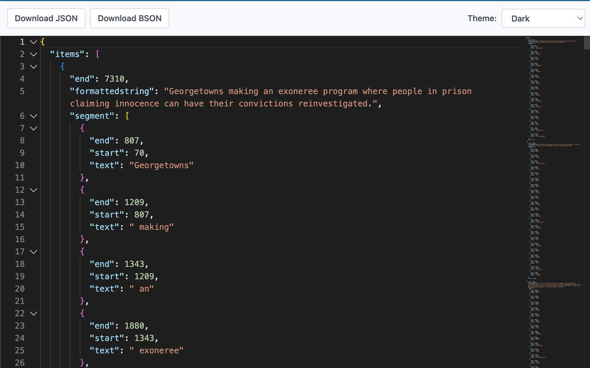

BSON Viewer
A Chrome extension for viewing BSON files with a beautiful, interactive interface

Features
- Automatic interception of BSON file requests - no manual uploads needed
- Monaco Editor integration - the same editor powering VS Code
- Multiple themes - VS Dark, GitHub Dark, Monokai, Solarized Dark, and more
- Search functionality - quickly find keys and values in your BSON data
- Copy and download - export to JSON format with one click
- File upload support - drag & drop or browse local BSON files
- Smart caching - faster loading for frequently accessed files
- Privacy-focused - all processing happens locally, no data sent to servers
How It Works
- Install the extension from the Chrome Web Store
- Navigate to any
.bson file URL in your browser
- The extension automatically intercepts and displays the file in a beautiful viewer
- Use the toolbar to copy JSON, download, change themes, or upload new files
Note: You can also manually upload local BSON files using drag & drop or the file picker.